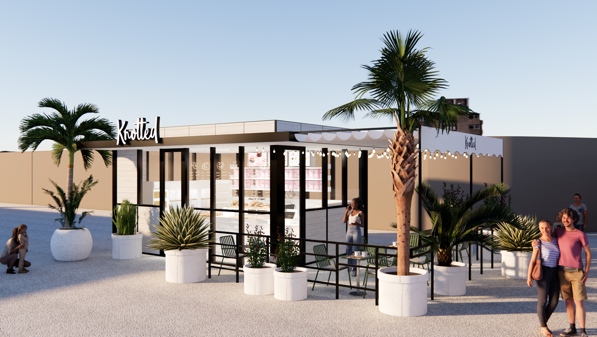
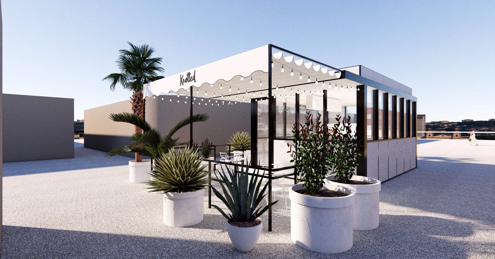
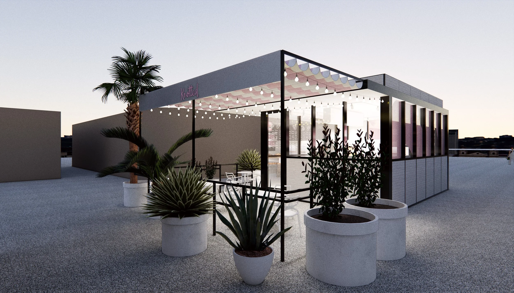
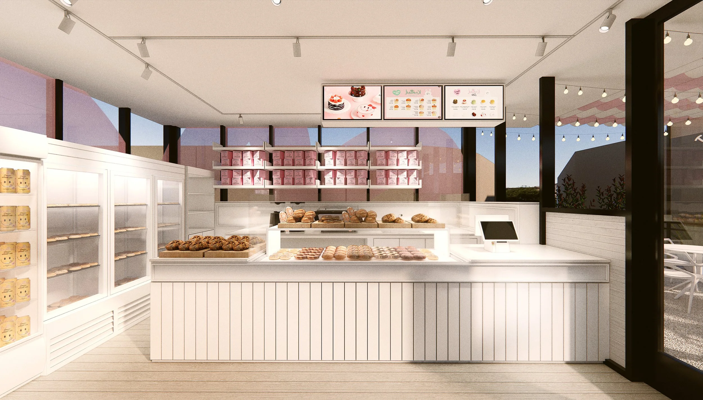
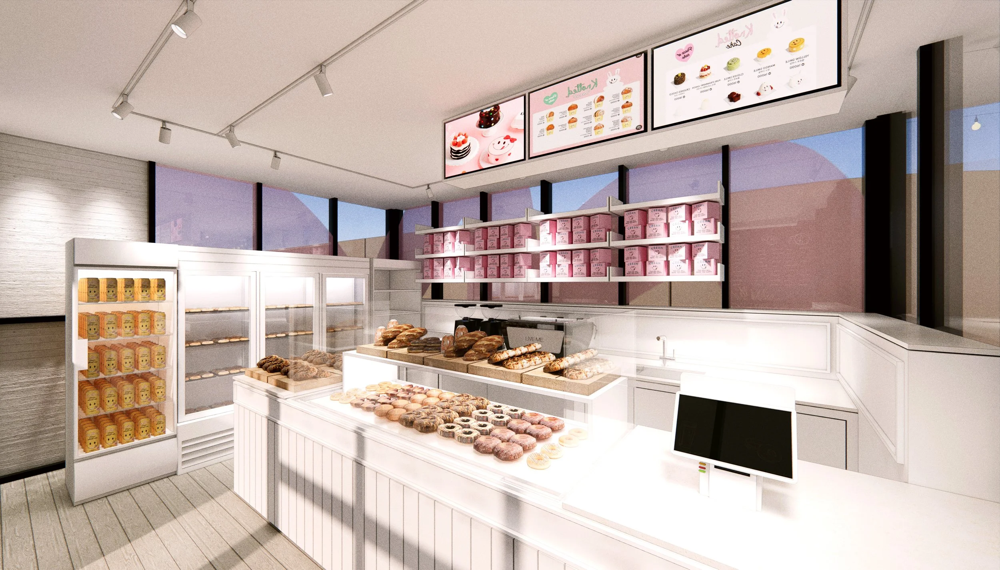
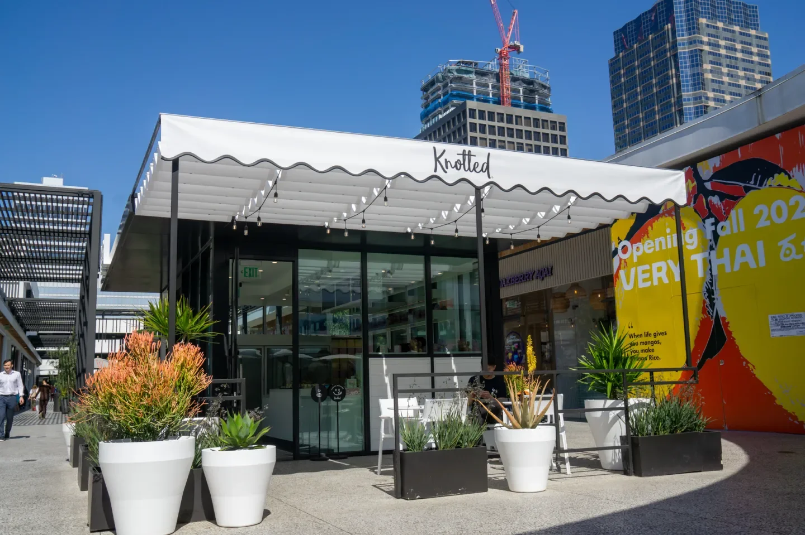
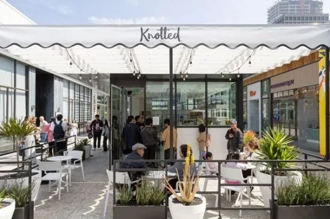
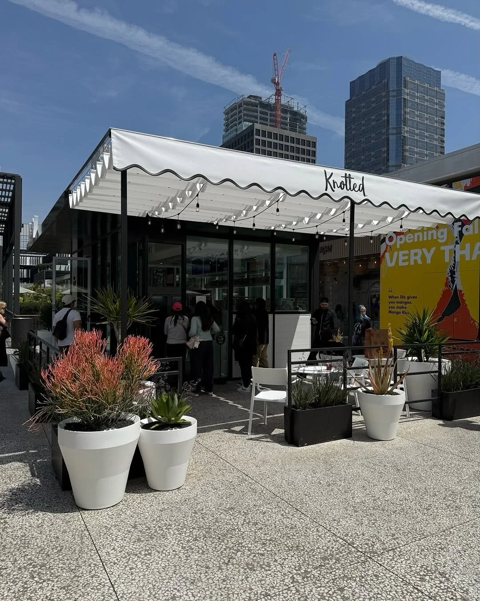
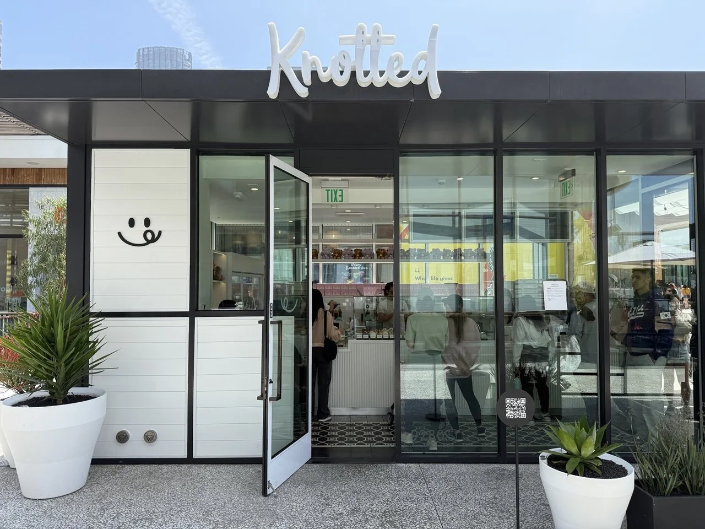
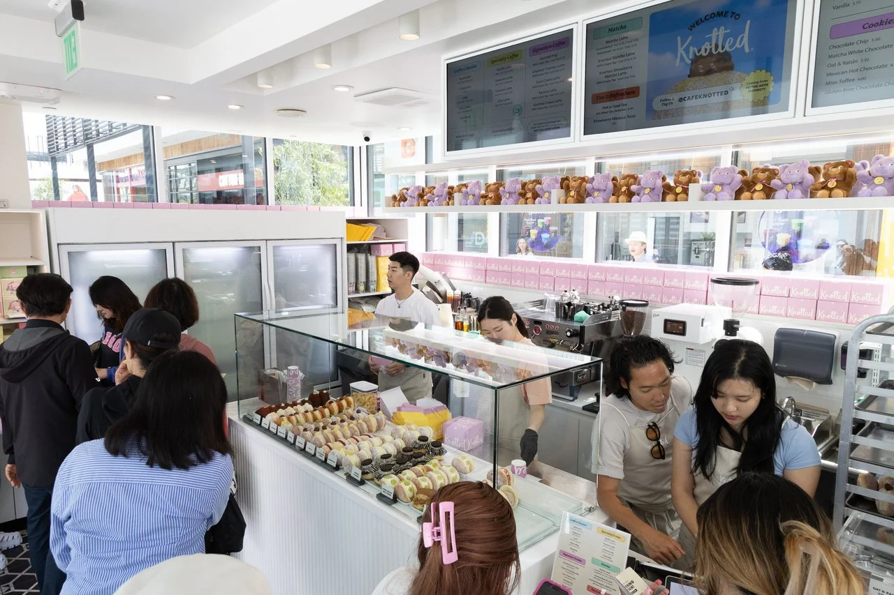

Knotted Westfield Century City
Knotted’s first US location — translation, not replication.노티드의 미국 1호점. 복제가 아니라 번역.

- Client
- GFFG
- Location
- Los Angeles, United States
- Year
- 2024
- Role
- Creative Director
- Scope
- Creative direction, retail concept, brand translation for the US market
The brief. Knotted’s first US location, at Westfield Century City in Los Angeles.
The idea. Translation, not replication. The surrounding retail language in Century City is cleaner and more restrained than Seoul, so the signature elements stay as focal points and modern lines carry everything else.
What I did. Creative direction and the retail concept for the US market, from the first renderings of the open-air pavilion and counter to the opened store.
브리프. 노티드의 미국 1호점, 로스앤젤레스 웨스트필드 센추리시티.
아이디어. 복제가 아니라 번역. 센추리시티의 리테일 언어는 서울보다 정제되어 있습니다. 시그니처 요소는 초점으로 남기고, 나머지는 모던한 선이 맡게 했습니다.
역할. 미국 시장을 위한 크리에이티브 디렉션과 리테일 콘셉트. 오픈형 파빌리온과 카운터의 첫 렌더링부터 오픈한 매장까지.
Plan계획
An open-air pavilion오픈형 파빌리온
Renderings: the scalloped awning, white planters and palms, and a clean white counter with pink box shelving.렌더링. 물결 어닝, 흰 화분과 야자수, 핑크 박스 선반을 둔 하얀 카운터.




As built완공
Open in Century City센추리시티에 문을 열다
The finished pavilion, its terrace and the counter on a busy day.완공된 파빌리온과 테라스, 그리고 붐비는 날의 카운터.




